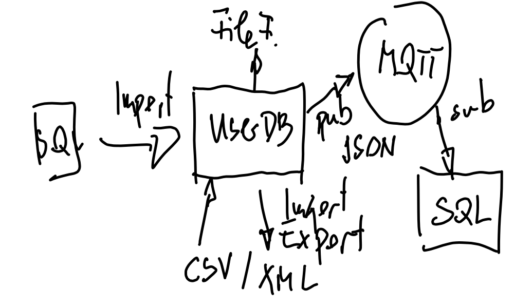

Python (2022-03-23, 2022-03-30, 2022-04-19 - 2022-03-21)¶
Agenda¶
2022-03-23: Basics¶
Visual Studio Code for Python Programming (or simply Notepad++)
-
Indentation bug demo: indentation-bug.py
Commandline Arguments (sys.argv) (Sample code: argv.py)
Exercise: Determine Maximum of Two Numbers (Solution: maximum.py)
Exercise: Greeting, Depending on Time of Day (Solution: greet.py)
2022-03-30: Basics¶
CSV¶
2022-04-19, 2022-04-20, 2022-04-21: Advanced¶
Plan For The Wild Part¶
{kind=link}
Group Exercise Preparation
Exercise: Refactoring - Extract Both CSV Formats Into Module
More details (omitted in “basics” days)
Select topics from chapters …
Note
Customer Request
Aus meiner Sicht wäre zu Beginn noch kurz ein Überblick über Installation/Betreiben von unterschiedlichen Versionen sinnvoll (am besten auch in Bezug auf virtuelle Umgebungen). In das Thema kommt man früher oder später unausweichlich.
Folgende Punkte sind interessant:
Installationsverzeichnis(e)
Verzeichnisse unterschiedlicher Versionen
Python in VisualStudio
Code mit unterschiedlichen Versionen ausführen
Wenn man Code aus dem Internet hernimmt kommt man meiner Erfahrung nach schnell auf diese Dinge. Dann machts erst Spaß wenn man weiß was man tun muss damits rennt…